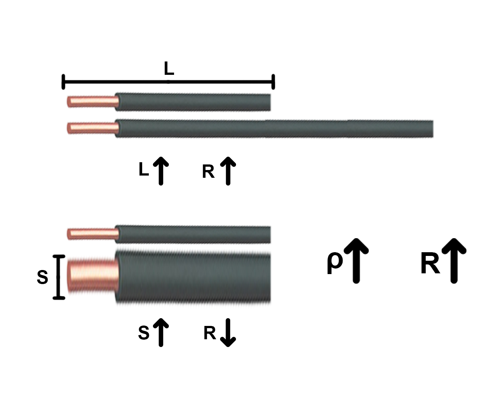

A Lei de Ohm é uma fórmula que relaciona a tensão, a corrente e a resistência elétrica em um circuito. A lei é expressa pela fórmula V = I x R, onde V é a tensão, I é a corrente e R é a resistência. A Lei de Ohm foi formulada pelo físico alemão Georg Simon Ohm (1789-1854).
Princípios da Lei de Ohm
A razão entre a tensão e a corrente elétrica é constante para um condutor mantido à temperatura constante.
A corrente elétrica que flui através de um condutor é diretamente proporcional à tensão aplicada.
A corrente elétrica que flui através de um condutor é inversamente proporcional à resistência do condutor.
Aplicações da Lei de Ohm
A Lei de Ohm é fundamental para o entendimento do comportamento dos circuitos elétricos.
A Lei de Ohm permite calcular e prever como a corrente elétrica flui através de um circuito.
A Lei de Ohm tem inúmeras aplicações práticas, desde o projeto de sistemas elétricos até a solução de problemas em equipamentos eletrônicos.
1ª Lei de Ohm
Explicação
A primeira lei de Ohm é a lei que traz a relação da resistência elétrica com a tensão elétrica e a corrente elétrica.
A primeira lei de Ohm postula que se em um circuito elétrico composto por um resistor, sem variação de temperatura, conectarmos uma tensão elétrica, o resistor será atravessado por uma corrente elétrica. Por meio dela, percebemos a relação de proporcionalidade entre tensão, resistência e corrente elétrica, sendo que se aumentarmos o valor de uma dessas grandezas, as outras também serão afetadas.
A primeira lei de Ohm nos informa que quando aplicamos aos dois terminais de um resistor elétrico, à temperatura constante, uma diferença de potencial (tensão elétrica), ele será percorrido por uma corrente elétrica, como podemos ver abaixo:
Além disso, por meio da sua fórmula, percebemos que a resistência elétrica é proporcional à tensão elétrica (ddp ou diferença de potencial elétrico), mas inversamente proporcional à corrente elétrica. Portanto, se aumentarmos a tensão, a resistência também aumentará. Contudo, se aumentarmos a corrente, a resistência diminuirá.
Formula
Formula da 1ª Lei de Ohm
U = R x I
R = U / I
I = R / U
Significado de Cada Elemento da Formula
U => Tensão ou potencial elétrico (V Volts)
R => resistência elétrica (Ω Ohms)
I => corrente elétrica (A Amperes)
2ª Lei de Ohm
Explicação
A segunda lei de Ohm mostra que a resistência de um condutor é relacionada à sua forma mas também a fatores microscópicos, descritos com base em uma grandeza física chamada resistividade.
A resistividade é a grandeza física que mede a oposição que algum material oferece ao fluxo de cargas elétricas, ou seja, materiais de alta resistividade oferecem grande resistência à passagem de corrente elétrica.

A segunda lei de Ohm descreve quais grandezas físicas relacionam-se com a resistência elétrica de um condutor. De acordo com essa lei, a resistência elétrica de um condutor homogêneo é diretamente proporcional ao seu comprimento e inversamente proporcional à área transversal desse condutor.
De acordo com a fórmula e a ilustração ao lado, a resistência elétrica de um fio condutor é diretamente proporcional ao seu comprimento, além disso, é inversamente proporcional à área de sua secção transversal (chamada coloquialmente de bitola). É por esse motivo que utilizamos fios mais grossos em aplicações que demandem correntes elétricas de grande intensidade — eles têm menor resistência elétrica e, por esse motivo, dissipam menos energia em forma de calor.